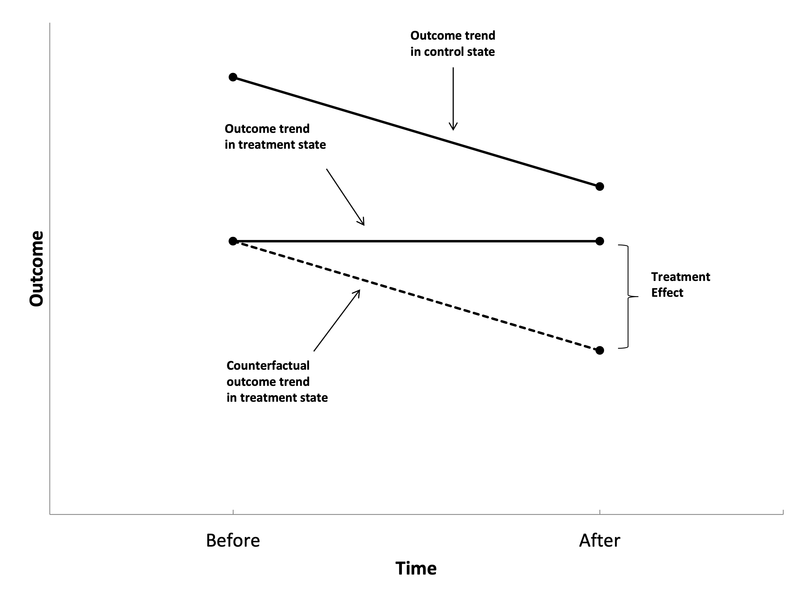

Today
- Today we’re going to look at one of the most commonly used methods
in causal inference, called Difference-in-Differences.
- Before we get there, let’s look at something simpler. The
Difference Estimator.
Difference Estimator
- Sometimes, we observe people before and after a program.
- A possible estimator of the impact of treatment is the change in the
outcome variable over time and is called the Before-After
estimator or the Difference estimator.
- This is a widely popular estimator, not only among professional
program evaluators.
The Basic Problem
- The relationship between time and treatment is very clear: early =
no treatment. Late = treatment
- If anything else is changing over time, we have a back
door!
- We assume that without the treatment, the outcome would be
constant.
The Basic Problem
- Ok, time is a back door, no problem. We can observe and measure
time. So we’ll just control for it and close the back door!
- Why not?
- Because in this group, you’re either before treatment and
T = 0, or after treatment and T = 1. If we
control for time, we’re effectively controlling for treatment
- “What’s the effect of treatment, controlling for treatment” doesn’t
make any sense
A solution to this problem has been developed by…

Snow, John (1855), On the Mode of Communication of Cholera,
2nd ed., London: John Churchill.
John Snow and the causes of Cholera
- Early 19th century: widely believed cause was miasma
- John Snow believed that transmission was waterborne
- Studied outbreak in a neighborhood of London
- Water supplied to households by two competing private companies:
- Lambeth
- Southwark & Vauxhall
- Until 1852, both companies drew their water from the Thames river
downstream, which was contaminated with sewage flow from London.
- Since 1852, Lambeth moved its water source to an area relatively
free from sewage.
John Snow and the causes of Cholera
Death rates per 10,000 people by water company:
| Lambeth |
150 |
10 |
-140 |
| Southwark & Vauxhall |
125 |
150 |
25 |
| Difference. |
25 |
-140 |
-165 |
Simplest case of a DiD estimator:
- Binary treatment
- Two time periods:
- Treatment only occurs in the second period.
- Two groups:
- Only individuals from one group are treated.
Idea of DiD
- Obtain an estimate of how the outcome would have changed for treated
units in the absence of the treatment. This is a missing counterfactual
trend.
- An estimate of this missing counterfactual trend could be the actual
trend for some untreated group over this same time period.
- The differences-in-differences (DiD) estimator is:
\[
\tau_{DiD} = [E(Y | Group=1, Time=1) - E(Y | Group=1, Time=0)]
\] \[
- [E(Y | Group=0, Time=1) - E(Y | Group=0, Time=0)]
\]
Idea of DiD
- The basic idea is to compare the changes over time across
groups
- We have a treated group that we observe both before and after
they’re treated
- And we have an untreated group
- The treated and control groups probably aren’t identical - there are
back doors! So… we control for group like with group fixed
effects or taking differences
Idea of DiD
- What kind of setup lends itself to being studied with
difference-in-differences?
- Crucially, we need to have a group (or groups) that receives a
treatment and a control group that does not
- Age ≤ 50
- Residence in a certain state
- All products containing meat
- And, we need to observe them both before and after
they get their treatment
- Observing each individual (or group) multiple times
Parametric estimation
\[
Y_i = \alpha_0 + \alpha_1 G_i + \alpha_2 T_i + \theta G_iT_i +
\left(\sum_{j=1}^k \beta_j X_{jt}\right) + U_i
\]
- We control for group G and and time T.
- The coefficient on the interaction between G and T
gives us the differential trend between treatment and control
group.
Thus, \(\theta\) identifies the
effect of interest.
Identification with DiD

Excercise
Mark the following points in the previous figure
\[
\begin{aligned}
A &= \alpha_0 + \alpha_1 + \alpha_2 + \theta \\
B &= \alpha_0 + \alpha_1 + \alpha_2 \\
C &= \alpha_0 + \alpha_2 \\
D &= \alpha_0 + \alpha_1 \\
E &= \alpha_0
\end{aligned}
\]
- Hint: Start with point E.
- Also consider how these points relate to the conditional
expectations on slide 9.
Another graphical representation
Difference-in-Differences
- It’s important in cases like this (and in all cases!) to think hard
about whether we believe our causal diagram, and what that entails
- Which, remember, is this:

Identification with DiD: Common Trend Assumption
- The key identifying assumption of the DiD estimator is that the
observed trend of the comparison group is the same as the counterfactual
trend of the treated group.
- i.e. if the treatment had not occurred, the gap between treatment
and control would have stayed the same after treatment as it was before
treatment
- How do we know this is true?
- We don’t! It’s one of these untestable assumptions. We have to
select a control group where we can plausibly assume that the
trends are identical.
- An indirect test is to look whether treatment and control group
followed parallel trends in the periods before the treatment.
Identification with DiD: No Anticipation Effects
This assumption is specific to DiD and a bit hard to
see.
Assume we are interested in evaluating the effect of a VAT raise
for certain goods on the demand for these goods.
Demand for these goods might increase in the pre-treatment period
if people buy ahead.
For DiD studies, it is important to consider whether the
announcement of a policy could have had an effect.
Some practical considerations for DiD I
- Institutional setting: Be clear about the policy
change (policy changes often come in bundles).
- Endogenous policy: Maybe groups have lobbied for a
policy in expectation of certain trends in outcomes.
- Spillovers: Choose a control group that reasonably
follows parallel trends but that is not affected by the treatment in any
way.
- Timing: Announcement might have an effect even
before the policy is officially in place (anticipation effect).
Some practical considerations for DiD II
- Discuss parallel trend assumptions: Show pre-treatment trends.
- Compositional effects: Can the treatment change the composition of
the treated group, i.e., by encouraging people to move in or out of a
treated area?
- Try a flexible DiD specification that allows you to trace out the
full adjustment path.
- Estimating standard errors in DiD settings is often difficult. Most
common strategy is to cluster standard errors at the group level. See
also Section 8.2.2 in Angrist and Pischke (2009).
Application: Extending unemployment benefits and early
retirement
- Inderbitzin, Staubli, and Zweimueller (2016) study the
causal impact of extended UI benefits on:
- The incidence of early retirement.
- The particular pathways through which workers exit the labor
market.
- In Austria, in the late 1980s and early 1990s, workers aged 50+ were
eligible for one year of regular UI benefits. Workers aged 55+ had
relaxed access to DI benefits.
- For empirical identification, they exploit the regional extended
benefits program (REBP) that changed early retirement incentives
dramatically.
- The program was in place between June 1988 and July 1993 and granted
UI benefits for up to 4 years to workers aged 50+ living in certain
regions of the country.
Regional distribution of program eligibility
Early Retirement pathways for unem- ployed men with/without REBP
eligibility
Notes: Gray arrows denote maximum
duration of regular UI benefits without REBP (1 year), and black arrows
denote maximum duration of regular UI benefits with REBP (4 years).
Unemployed men can retire early with DI at age 54 without the REBP and
age 51 with the REBP by claiming regular UI benefits followed by a DI
pension at age 55 (early retirement with DI). Unemployed men can retire
early without DI at age 58 without the REBP and age 55 with the REBP by
claiming regular UI benefits followed by special income support at age
59 and an old-age pension at age 60 (early retirement without DI).
Transitions into early retirement
Trends in transitions into early retirement with and without DI